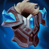

起手組件
 紅水晶
紅水晶先補最大生命，讓前期雪球進場與吞噬回復更有容錯。

校正至 7.3c · 2026-10-25。Tier與配置是本站的模式策略判斷，不是官方勝率排名。
起手組件 → 一階鞋或首件核心（依壓力調整）→ 核心成裝 → 鞋子升級 → 情境後續裝。五件成裝加一雙鞋；鞋子兩張圖表示升級前後，不是同時購買兩雙。
先補最大生命，讓前期雪球進場與吞噬回復更有容錯。

努努和威朗普：貼身戰鬥時提供持續範圍灼燒；依額外生命成長，不再宣稱舊版普攻疊層或熾灼之冠的百分比灼燒。

努努和威朗普：針對普攻壓力並承擔反制治療；對手沒有對應威脅時，可把這個位置換成魔防或團隊功能。

努努和威朗普：此順序以已購成裝的額外生命達到1250為前提，才啟動離戰回復。若增幅已提供足夠額外生命，可提早；受到傷害時不能靠它立即回血。

努努和威朗普：承受魔法傷害後疊層取得額外魔防與跑速；不再宣稱舊版百分比魔傷減免。

努努和威朗普：搭配已有的生命與雙防，接戰疊層後擴大坦度；不是沒有其他防裝時的一件萬能雙抗。

常見物理陣容下先補普攻減傷與護甲。

努努和威朗普：鍍板鋼蓋升級，針對普攻及物理傷害；不把物理護盾當作魔法傷害防護。

保留最可靠的進退與關鍵技能銜接；雪球戰車進場後仍可用閃現修正位置。

雪球命中後可等待隊友跟上再進場，讓近戰英雄在單線拉扯中擁有穩定的接戰與追擊角度。

擊飛與定身後建立減速區，讓隊友更容易跟上。

頻繁硬控可獲得護盾，提高進場容錯。

吃第一輪爆發時減少被瞬間融化。

單線兵線密集，能穩定累積最大生命。
技能加速提高吞噬、雪球齊射與控制循環。
1 技 > 3 技 > 2 技
開局三個基礎技能各 1 級，之後主 1、次 3；大絕能點就點。7.1h 後仍以吞噬續戰與三技穩定控制為主。
先從較遠位置開始滾雪球，避免在敵人眼前短距離起手。撞到人後用三技補定身，吞噬留到血量下降再吃，回復效益更高。
兩到三件坦裝後主動承擔第一波。雪球若無法直接撞後排，撞前排替隊友創造輸出也可以；大絕常用來切割戰場，不必每次追求滿蓄力。
你是開戰與吸傷核心。先確認隊友跟得上再滾入，進場後利用巨像護盾、吞噬與大絕護盾拖時間，讓後排安全輸出。

敵方暴擊射手很多
替換好戰者，進一步降低暴擊壓力。

敵方攻速型普攻核心很多
替換自然之力或好戰者，利用冰心降低攻速。

我方需要更多貼身爆發與開戰傷害
替換好戰者，硬控後觸發黎明法衣提高團戰壓力。
標準 ARAM 最後可追溯倍率：7.2a 將努努傷害 110%→115% 列在 AAA ARAM，且未標註同步標準 ARAM，因此本站不套用該數值。標準 ARAM 維持 100%／100%；同步 7.1h 吞噬額外生命傷害 6%→5%、額外生命治療係數 12%→10%，以及雪球齊射單顆傷害下修。 本輪核對至7.3c，未以符文大亂鬥倍率覆蓋；官方未提供本英雄完整新版倍率總表，若遊戲內不同以當局模式增益為準。
努努和威朗普靠雪球先手、三技能定身與大絕切割戰場，吞噬則提供大量自我回復；控場、體型與大地是核心，護盾與技能類提高進場後續戰。
實戰使用方式：看遊戲增幅卡片下方的官方分類 → 點相同分類 → 優先看 S+／S／A；再依本局增幅方向選擇對應出裝路線。
核心
雪球擊飛與三技能定身都能穩定觸發，控場增幅利用率非常高。
核心
高生命與體型能提高前排承傷，也能放大控制覆蓋。
高適配
坦度、近身反制與控制效果非常符合雪球進場後的工作。
高適配
大絕蓄力可獲得護盾，護盾免控與護盾真傷都能提高站場。
適配
吞噬、雪球與大絕都依賴技能循環，技能加速能增加第二輪控制。
適配
雪球與進場路線高度依賴移速，額外跑速能改善起手與追擊。
控場／體型／大地增幅多
熾灼、反甲與自然之力支撐第一波進場，好戰者與雅瑪蘭提高後續承傷。 本路線已同步7.3c的一般裝備；增幅專屬替換另依抽卡決定。
努努和威朗普：貼身戰鬥時提供持續範圍灼燒；依額外生命成長，不再宣稱舊版普攻疊層或熾灼之冠的百分比灼燒。
努努和威朗普：針對普攻壓力並承擔反制治療；對手沒有對應威脅時，可把這個位置換成魔防或團隊功能。
努努和威朗普：此順序以已購成裝的額外生命達到1250為前提，才啟動離戰回復。若增幅已提供足夠額外生命，可提早；受到傷害時不能靠它立即回血。
努努和威朗普：承受魔法傷害後疊層取得額外魔防與跑速；不再宣稱舊版百分比魔傷減免。
努努和威朗普：搭配已有的生命與雙防，接戰疊層後擴大坦度；不是沒有其他防裝時的一件萬能雙抗。
常見物理陣容下先補普攻減傷與護甲。
努努和威朗普：鍍板鋼蓋升級，針對普攻及物理傷害；不把物理護盾當作魔法傷害防護。
需要隊友快速跟傷
加入黎明法衣，讓雪球或定身命中後更容易完成集火。
努努和威朗普：貼身戰鬥時提供持續範圍灼燒；依額外生命成長，不再宣稱舊版普攻疊層或熾灼之冠的百分比灼燒。
我方需要更多貼身爆發與開戰傷害
替換好戰者，硬控後觸發黎明法衣提高團戰壓力。
努努和威朗普：此順序以已購成裝的額外生命達到1250為前提，才啟動離戰回復。若增幅已提供足夠額外生命，可提早；受到傷害時不能靠它立即回血。
努努和威朗普：承受魔法傷害後疊層取得額外魔防與跑速；不再宣稱舊版百分比魔傷減免。
努努和威朗普：搭配已有的生命與雙防，接戰疊層後擴大坦度；不是沒有其他防裝時的一件萬能雙抗。
常見物理陣容下先補普攻減傷與護甲。
努努和威朗普：鍍板鋼蓋升級，針對普攻及物理傷害；不把物理護盾當作魔法傷害防護。
分類與單卡評級是本站條件式建議。新卡完整效果未核實時不補造數值；當局抽到的卡片會改變優先順序。
7.3c／2026-10-25：本英雄標準ARAM重新核對五件成裝、鞋線、符文、技能用途與模式差異。共通裝備採7.3改版並累計7.3a/b差異；7.3c新倍率只套用符文大亂鬥。Tier為本站單線5v5判斷，並非官方勝率排名。